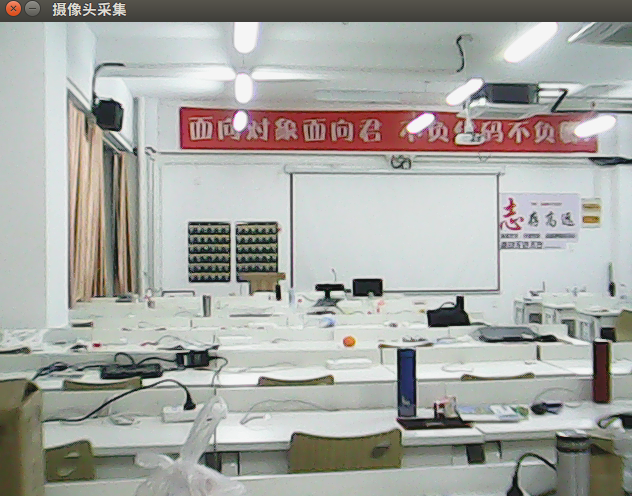

OpenCV-视频操作
测试代码
# coding=utf-8
import cv2
# 1. 打开摄像头 0表示默认的第1个摄像头设备
cap = cv2.VideoCapture(0)
# 2. 循环采集摄像头数据
while True:
# 2.1 获取一帧数据
ret, frame = cap.read()
# 2.2 显示这一帧数据
cv2.imshow("摄像头采集", frame)
# 按q退出
if cv2.waitKey(1) & 0xFF == ord('q'):
break
# 4. 释放摄像头资源(关闭摄像头)
cap.release()
# 5. 关闭所有窗口
cv2.destroyAllWindows()

补充说明
关于操作摄像头 还有一个模块叫做：SimpleCV https://github.com/ingenuitas/SimpleCV